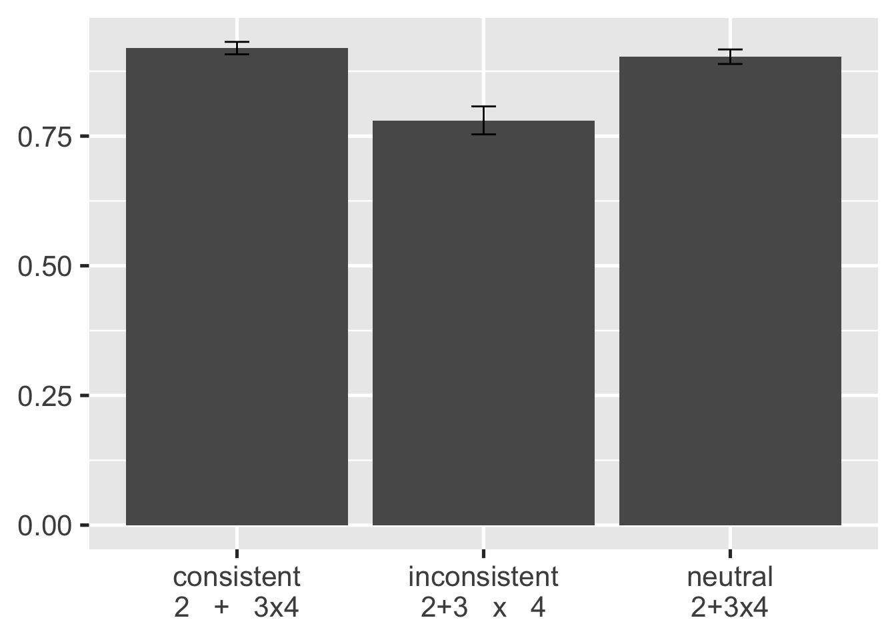
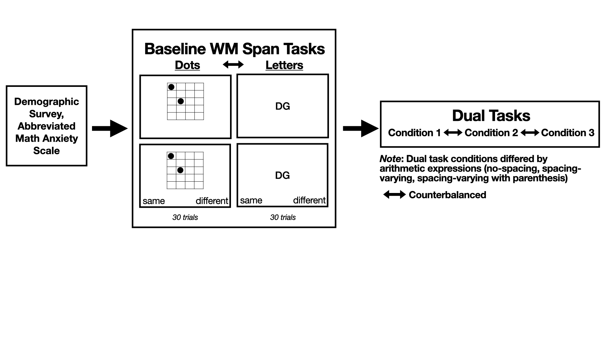
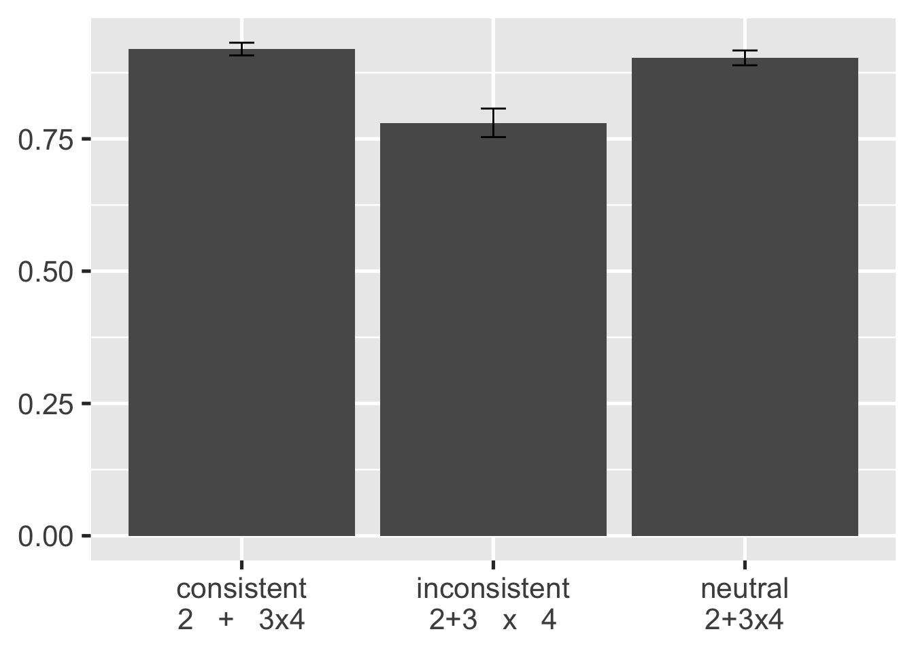
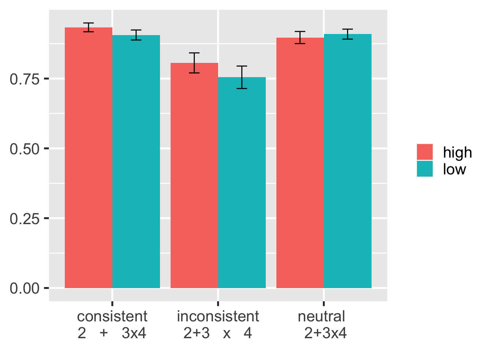
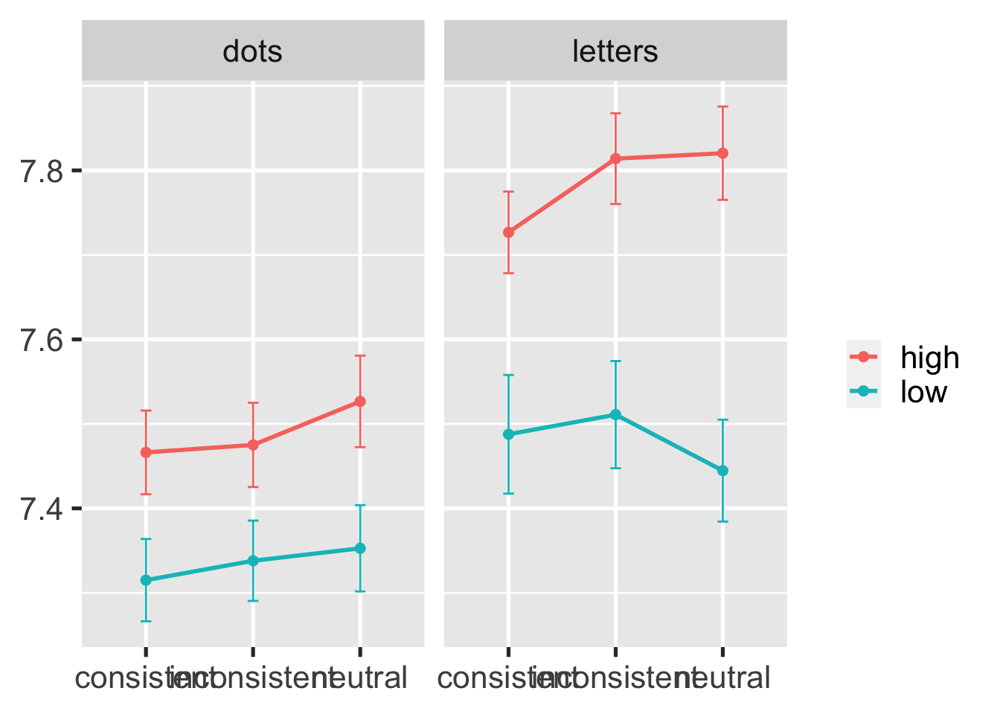

`summarise()` has grouped output by 'id1', 'load', 'wmLoad'. You can override
using the `.groups` argument.
Today, I’m going to talk about whole number arithmetic, in particular. What does it take to do arithmetic computation? There is domain-specific knowledge, where we have to recognize numbers and operations and knowledge about the magnitude of numbers.
And there is working memory, which is the ability to maintain and mentally manipulate information. We know that working memory is involved because when individuals do computations and do a working memory task at the same time, computation interferes with memory, and so we can conclude that working memory is involved in working memory. Indeed, participants are slower by 7 to 19% during arithmetic under any working memory load. In addition, arithmetic share the similar neural regions as working memory, particularly visuospatial working memory.
There has been this recent research on perceptual processes, specifically spacing, which refers to the proximity between operands and operators. Spacing can facilitate or hinder arithmetic performance, such that… [read slide]. For example, read [slide]
Why does the effect persist?
Does spacing interact with working memory?
The spacing effect persists regardless of whether the computation is done in the lab, in school, or in a homework environment, and regardless of participant age (Closser et al., 2022).
It also persists when there is a delay between viewing expression and evaluating the expression.
It also depends on the inhibitory control. Those who have higher inhibitory control are less likely to be susceptible to spacing effect
While much has been theorized about why visual and perceptual features affect problem-solving, there is a lack of empirical research regarding the mechanisms underlying this learning process.
In this presentation we seek to answer why does this effect persist. Why do individuals perform poorly for expressions with inconsistent spacing? We think that this is working memory
and we are interested in whether there is an interaction on spacing and working memory.


Method. We have not actually finished this project. But at the end of data collection, we should have about 114 adults who have completed hte following in Gorilla: - a demographic background survey - a math anxiety survey - two baseline working memory span tasks - and three dual tasks
Dual tasks are often used to investigate whether two tasks share the same process.
Results from the spacing-varying condition (condition 2)
So, results. Again, we are interested in this particular question, does spacing interact with working memory. For this question, we are looking at an analysis of the second condition.
spacing x type x loadJust to remind you, each trial consisted of arithmetic evaluation and working memory recall. So we will be looking at the accuracy and response times for those, with Spacing, Type, and Load as independent variables. And we will conduct analyses of variance.
34 participants (30%), aged 19.4 to 68.1 years (M=31.6, SD=12.8)
Highly educated with moderate math anxiety (M=2.8, SD=)
Median number of dots and letters in low and high load trials:
spacing, F(2,64)=7.68, p=.001, \(\eta^{2}_{p}\)=0.19`summarise()` has grouped output by 'id1', 'load', 'wmLoad'. You can override
using the `.groups` argument.
Here comes the graphs. First, as expected, we found an effect of spacing. With accuracy on arithmetic performance as our dependent variable, participants did equally well on expressions with consistent or neutral spacing and least well on expressions with inconsistent spacing.
load, F(1,32)=5.83, p=0.02, \(\eta^{2}_{p}\)=0.15, with higher accuracy when WM load is high (87.9%) vs. low (85.7%)`summarise()` has grouped output by 'spCond'. You can override using the
`.groups` argument.
That participants did better under high load than low load is an unusual finding because we usually see the opposite, but there two explanations for this.
One explanation is order effect. Participants saw all the low-load trials before the high-load trials, and they could be less accurate in the low-load trials because they were adjusting to the task. However, this does not explain the slight differences between spacing conditions, which were randomized.
Another explanation is that individuals were more likely to track information under low load. By this, I mean that in the low load, participants may have been maintaining the dot or letters while evaluating the expression. And when there was inconsistent spacing, it was particularly harder for them to track and manipulate the spacing.
That is, though there is no interaction, we see differences between loads by spacing, which might mean that spacing is encoded into working memory.
load, F(1,32) = 21.76, p<.001, \(\eta^{2}_{p}\)=0.40 with higher accuracy for low (M=85.1%) than high (M=77.6%) load trials`summarise()` has grouped output by 'spacing', 'load'. You can override using
the `.groups` argument.
No we are going to look at working memory accuracy. We did not see differences in accuracy between spacing types in either graph. However, we see that there are differences between low and high load. As expected, participants did better trials with low load.
Now, there is no significant interactions, but we see larger difference when recalling letters vs. dots.
load: F(1,32) = 15.56, p<.001, \(\eta^{2}_{p}\)=0.33, with lower RTs for low load trialstype: F(1,32) = 6.02, p=0.02, \(\eta^{2}_{p}\)=0.16, with lower RTs for dot recallb <- dat.2.1.sum %>%
ggplot(aes(x=spacing, y=mean_log_rt, group=load, colour=load)) +
geom_line(linewidth=1) +
geom_point(size=2) +
facet_wrap (~display) + ylab("Response Time \n (log-transformed)") +
geom_errorbar(aes(ymin = mean_log_rt - se_log_rt, ymax = mean_log_rt + se_log_rt), width = .1)
b +
theme_gray(base_size = 20) +
theme(axis.title.x = element_blank(),
axis.title.y = element_blank(),
legend.title=element_blank())
Here are graphs of response times. There was a main effect of load, with participants being faster for low load trials, and there was a main effect of type, with participants being faster when recalling dots.
Again, we do not see differences between spacing conditions in either graph. We also do not have a significant interaction effect. However, we see that there are differences between low and high load, with a larger difference when recalling letters as opposed to dots.
Differences between loads and types during working memory recall may indicate that visuospatial WM is more involved in multi-operand arithmetic or spacing facilitates VSWM, which we can test by analyzing conditions 1 and 2.
So, does spacing interact with WM? We did not find significant interactions. This might be due to small sample size and highly educated sample.
Regardless, I think this work has implications particularly for the increase of research on numerical cognition and visuospatial working memory. More practically, it could tell us more about how perceptual cues are used during math learning, wherein perceptual cues can be used to support VSWM (or vice versa).
Pattern may be due to order effect or spacing being maintained in WM
Smaller difference between high/low loads for dots may indicate that there is greater VSWM involvement during dual task and/or that spacing facilitates VSWM
Email: jmed7@umd.edu
Twitter: josh_medrano10
Website: joshm7.github.io
Thank you so much for listening to me and my colleagues talk. I will take any questions right now.
What if we do not find interactions between spacing and working memory?
It is possible that working memory might not be holding spacing information. There have been findingwhere problem size did not have an effect on working memory or where findings are mixed, but effects may be moderated by math anxiety (e.g., DeCaro et al., 2010).